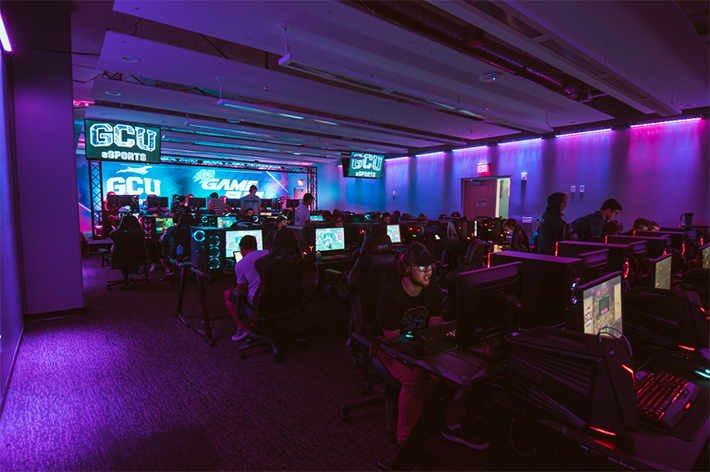

GCU Game Development & HCI Programs Curriculum
I contributed instructional design and subject-matter expertise to degree programs spanning game design, game development, and human-computer interaction.
View Case Study →Senior Curriculum Director & AI Learning Strategist.
I design learner-centered technical curricula and academic programs—from early concept and accreditation planning through course development, faculty support, and classroom execution.
What I’m known for
Curriculum and technology leader working at the intersection of software engineering, higher education, instructional design, machine learning, and artificial intelligence.
My work has spanned Data Science, AI and Machine Learning, Full-Stack Development, Data Engineering, Cybersecurity, Game Development, Game Design, and Human-Computer Interaction. I have contributed to accredited bachelor’s and master’s degree programs, supported more than 50 courses, led teams of 20+ faculty and staff, directly taught more than 200 students, and helped scale career and academic support for more than 1,600 learners and alumni.
At Bethel School of Technology, I led curriculum strategy, faculty development, instructional quality, and program improvement across multiple technical disciplines. My work included a comprehensive redesign of a 13-course Cybersecurity program that addressed longstanding bottlenecks, improved course clarity and progression, strengthened instructional consistency and certification pathways, and supported partnerships with CompTIA, AWS, and GoHackMe. These improvements reduced annual program costs by approximately $66,000 while strengthening the experience for students and staff.
I also helped drive measurable learner and career outcomes, including retention rates of up to 90%, an 85% reported job-hire rate, and a 65% increase in salary outcomes. During this period, Bethel received national recognition from Newsweek, Fortune Education, SwitchUp, and University Research & Review for its technical programs, workforce preparation, and faith-based learning model.
My engineering background includes work with PayPal, Autodesk, and Continuant. That experience continues to shape my belief that strong learning programs should be intentional, scalable, measurable, and designed around the people who use them.
Today, I develop AI-powered workflows, educational technologies, and technical learning experiences that help students, educators, and organizations adapt to an AI-native future.
Curriculum strategy, AI-powered learning, technical education, instructional systems, and software engineering.
Human-centered, evidence-informed, industry-aligned, and built for scale.
I contributed instructional design and subject-matter expertise to degree programs spanning game design, game development, and human-computer interaction.
View Case Study →I experienced one course through its complete lifecycle: planning, curriculum creation, implementation, facilitation, learner feedback, and refinement.
View Case Study →I improved established technical programs, led the launch of a high-school AP Computer Science preparation pathway, and developed new bachelor-level program pathways.
View Case Study →Explore a standards-aligned cybersecurity course proposal spanning 20 modules, safe hands-on labs, authentic assessments, AI and privacy concepts, and a capstone organizational security challenge. Review the curriculum architecture, jurisdiction research, downloadable planning resources, and an interactive phishing-analysis prototype.
Explore the Course Proposal →I connect learning science, technical subject-matter expertise, program strategy, and classroom experience to design curriculum that works in practice—not only on paper.
Let’s Connect →My curriculum work spans graduate and undergraduate program consulting, technical course redesign, new-program development, and direct classroom delivery. That combination allows me to evaluate curriculum from the perspectives of the learner, instructor, designer, and institution.
I collaborated with university leadership, instructional designers, and subject-matter experts to design three technology degree programs— from early program concepts through curriculum mapping, course design, and industry-aligned learning experiences.
Hover or click to read more Close case study
A full-circle view of one course—from early planning and writing through live instruction, learner feedback, and curriculum refinement.
Hover or click to read more Close case studyI led technical curriculum, instructional teams, career-readiness programs, industry partnerships, and new academic pathways across Data Science (AI/ML), Full-Stack Development, UI/UX, and Cybersecurity.
Hover or click to read more Close case studyI supported digital experiences, educational technology, enrollment systems, and communications designed to help Christian school founders move from early vision to sustainable launch.
Hover or click to read more Close case studyOutcomes, assessments, technology, faculty guidance, learner support, and implementation must reinforce one another—not compete for attention.
I design across the complete learning ecosystem, connecting institutional goals, learner needs, faculty usability, technical accuracy, assessment evidence, and long-term program sustainability.
Clarify learner context, performance gaps, stakeholder priorities, technical constraints, and measures of success.
Map outcomes, competencies, course sequences, assessments, projects, and instructional support into a coherent structure.
Write clear content, authentic projects, rubrics, faculty guidance, and learner-facing experiences that work in practice.
Use instructor experience, learner performance, feedback, and quality review to continuously strengthen the program.
Degree pathways, course sequencing, competency mapping, outcome alignment, and scalable academic structures.
Learning objectives, authentic assessment, project-based learning, rubrics, accessibility, and learner-centered course design.
Game development, software engineering, full-stack development, data science, AI, cybersecurity, UI/UX, and HCI.
Adjunct instruction, facilitation, student mentoring, grading, feedback, and curriculum evaluation from the instructor perspective.
Quality standards, SME collaboration, review workflows, documentation, implementation planning, and continuous improvement.
HTML, CSS, JavaScript, AI-supported workflows, interactive learning experiences, and rapid educational technology prototypes.
One quote has consistently shaped my approach to leadership, curriculum design, and embracing innovation:
“The most dangerous phrase in the English language is, ‘We have always done it this way.’